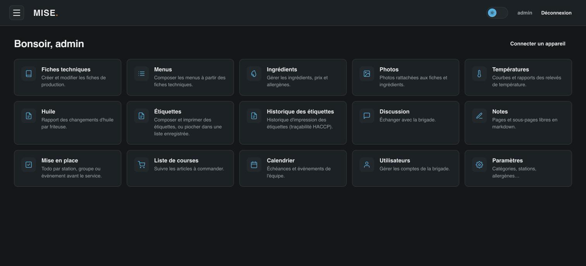
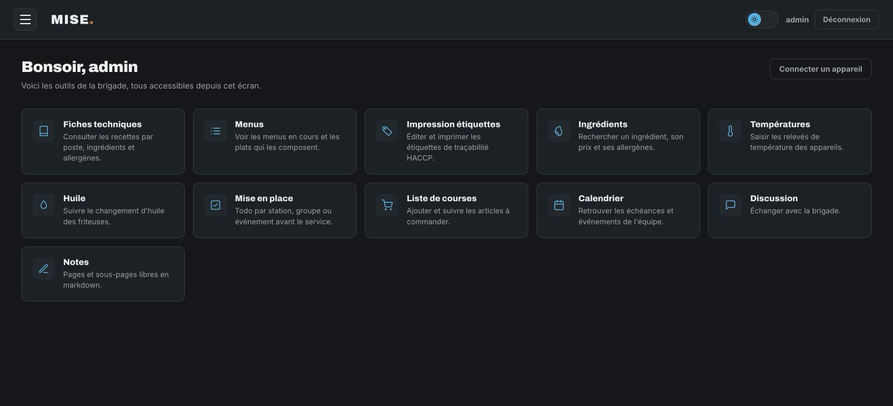

Outil open source de cuisine professionnelle — fiches techniques, traçabilité HACCP, menus et étiquetage. Développé par un cuisinier, pour sa brigade.


Utilisé sur un poste fixe ou un mini PC en cuisine, pour construire et faire vivre tout le référentiel que la brigade consulte au quotidien.
Création et édition complètes : ingrédients avec sous-groupes, étapes chronométrées, matériel, HACCP, conservation, astuces de chef, photos, schéma de dressage visuel (éléments positionnés sur l'assiette), et import/export markdown en lot. Une fiche peut aussi servir de composant dans une autre.
Cas concret — le chef colle d'un coup 12 fiches générées à partir d'un vieux classeur papier via une IA, dans le format markdown attendu ; elles arrivent déjà structurées, il n'a plus qu'à relire. Une sauce béarnaise créée une fois comme fiche est ensuite réutilisée comme composant dans 3 plats de la carte — la modifier à un seul endroit la met à jour partout.
Ingrédients (avec prix au kg/L et allergènes liés), catégories, stations et groupes de la brigade — la base commune sur laquelle s'appuient fiches et menus.
Cas concret — le chef met à jour le prix du beurre une seule fois dans le référentiel ; le food cost de toutes les fiches qui en contiennent se recalcule automatiquement côté app publique, sans ressaisie.
Sections et plats combinant plusieurs fiches techniques, import markdown, impression, génération de liste de courses et grille allergènes imprimable par menu.
Cas concret — avant un menu dégustation, le chef imprime la grille allergènes du menu (calculée automatiquement depuis les fiches qui le composent) pour l'avoir sous la main en salle.
Fiche par appareil (frigo, chambre froide...) avec plage de température normale, et un rapport par période avec courbe, tableau détaillé des relevés hors plage, et impression.
Cas concret — lors d'un contrôle sanitaire, le chef sort en 30 secondes l'historique de température du mois pour la chambre froide poissons, imprimé et prêt à montrer.
Fiche par friteuse avec durée de vie d'huile paramétrable, historique des changements et date conseillée du prochain, rapport imprimable par période.
Cas concret — avant le coup de feu du midi, le chef voit en un coup d'œil quelle friteuse est en retard sur son changement d'huile (flag rouge "à changer").
Paramétrage des types d'étiquettes HACCP (DLC suggérée, éditable par type) et des réglages d'imprimante utilisés par toute la brigade côté app publique.
Cas concret — le chef resserre la DLC par défaut du type "Décongelé le" de J+2 à J+1 pour un produit plus fragile ; le changement s'applique immédiatement à toutes les étiquettes composées par la brigade.
Gestion des comptes et des rôles (user / admin) via Laravel Sanctum, plus connexion rapide par QR code pour amener un nouvel appareil sur l'app sans taper d'adresse.
Cas concret — un stagiaire arrive pour la semaine : le chef lui crée un compte user en 10 secondes, avec accès à l'app publique mais pas au back-office.
Discussion interne, liste de courses, notes libres en markdown, calendrier d'événements et mise en place classée par station, groupe ou événement.
Cas concret — le chef programme un banquet de 80 couverts dans le calendrier et affecte les tâches de mise en place par station ; la brigade les retrouve et les coche depuis l'app publique au fur et à mesure.
Une PWA utilisée en service par toute la brigade — consultation des fiches et menus, et les gestes de traçabilité qui reviennent chaque jour.
Recherche par station, lecture des étapes, HACCP et schéma de dressage, allergènes agrégés affichés automatiquement, et food cost (total + prix/portion) recalculé en direct quand on ajuste le nombre de portions.
Cas concret — en plein service, un commis ouvre la fiche sur la tablette de la station et fait passer le nombre de portions de 4 à 12 pour un gros groupe — quantités d'ingrédients et coût matière s'ajustent tout seuls.
Consultation, recherche et impression directe, avec une grille allergènes dédiée par menu.
Cas concret — un client signale une allergie au gluten en salle : le serveur ouvre la grille allergènes du menu du jour sur l'app pour vérifier en 5 secondes quels plats conviennent.
Composition et impression (imprimante thermique Zebra en réseau, ou navigateur en secours), listes d'étiquettes enregistrées et réutilisables avec quantités, et historique de toutes les impressions consultable pour la traçabilité.
Cas concret — à l'ouverture, le commis imprime d'un coup la liste "ouverture du matin" (6 produits, quantités prédéfinies) au lieu de composer chaque étiquette une par une.
Saisie de la température de tous les appareils sur une seule page, avec alerte visuelle immédiate si une valeur sort de la plage normale de l'appareil.
Cas concret — à la ronde de 11h, le commis saisit les 8 relevés sur une seule page ; la chambre froide légumes passe en rouge instantanément, avant que ça devienne un vrai problème.
Une carte par friteuse (dernier changement, prochain conseillé, historique dépliable) avec un bouton "Marquer changée" — la date est toujours celle du jour, impossible à antidater.
Cas concret — après avoir changé l'huile de la friteuse 2, le commis clique "Marquer changée" ; la date ne peut pas être modifiée, ce qui garde la traçabilité fiable même si la saisie est faite un peu après coup.
Tâches à faire avant service, classées par station, groupe ou événement à venir, avec une confirmation explicite avant de marquer une tâche comme faite.
Cas concret — avant le coup de feu, chaque commis consulte la liste de tâches de sa station et les coche au fur et à mesure ; le chef voit en direct ce qu'il reste à faire sans avoir à faire le tour de la cuisine.
Discussion interne, liste de courses partagée, notes libres en markdown et calendrier d'événements, accessibles à toute l'équipe depuis son propre téléphone.
Cas concret — un commis remarque qu'il manque de la crème en plein service et l'ajoute à la liste de courses depuis son téléphone ; le chef la retrouve en faisant les courses le lendemain.